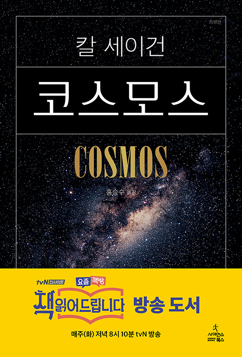

칼 세이건 (지은이),홍승수 (옮긴이) 사이언스북스 2006-12-20 원제 : Cosmos (1980년)

칼 세이건의 <코스모스> 특별판이 세이건의 서거 10주기를 기념하여 출간되었다.
이 특별판은 지난 2004년 12월에 출간된 <코스모스>(양장본)의 텍스트 전문과 도판 일부를 사용하고 판형을 휴대하기 쉬운 신국판으로 바꿔 출간한 책으로,
독자들이 좀 더 쉽게 칼 세이건의 메시지를 만날 수 있도록 배려한 책이다.
이번 특별판은 기존의 양장본의 텍스트 전문을 그대로 싣고 도판 중 본문을 이해하는데 꼭 필요한 것들을 골라 실었다.
그중에서도 컬러로 봐야 할 도판 자료들을 60컷 가까이 골라 컬러 화보로 본문 중간중간에 배치해 넣었다.
또 하나 특기할 만한 것은 칼 세이건의 부인인 앤 드루얀이 칼 세이건의 서거 10주기를 맞춰 세이건의 빈자리를 생각하는 아름다운 글을 한국어판 서문으로 실은 것이다.
세이건이 생전에 이루어 놓은 일들과 그가 살아 있었다면 지금 해냈을 일들을 생각하는 이 글을 <코스모스>가 가진 가치를 한층 빛내 주고 있다.
목차
머리말
Chapter 1 코스모스의 바닷가에서
Chapter 2 우주 생명의 푸가
Chapter 3 지상과 천상의 하모니
Chapter 4 천국과 지옥
Chapter 5 붉은 행성을 위한 블루스
Chapter 6 여행자가 들려준 이야기
Chapter 7 밤하늘의 등뼈
Chapter 8 시간과 공간을 가르는 여행
Chapter 9 별들의 삶과 죽음
Chapter 10 영원의 벼랑 끝
Chapter 11 미래로 띄운 편지
Chapter 12 은하 대백과사전
Chapter 13 누가 우리 지구를 대변해 줄까?
감사의 말
부록 1
부록 2
참고 문헌
옮긴이 후기
찾아보기
Picture credits
저자 및 역자소개

칼 세이건 (Carl Sagan) (지은이)
1934년 미국 뉴욕 브루클린에서 우크라이나 이민 노동자의 아들로 태어났다. 시카고 대학교에서 인문학 학사, 물리학 석사, 천문학 및 천체 물리학 박사 학위를 받았다. 스탠퍼드 대학교 의과 대학에서 유전학 조교수, 하버드 대학교 천문학 조교수를 지냈다. 그 후 코넬 대학교의 행성 연구소 소장, 데이비드 던컨 천문학 및 우주 과학 교수, 캘리포니아 공과 대학의 특별 초빙 연구원, 세계 최대 우주 동호 단체인 행성 협회의 공동 설립자 겸 회장 등을 역임했다. 또한 미국 항공 우주국(NASA)의 자문 위원으로 매리너, 보이저, 바이킹, 갈릴레오 호 등의 무인 우주 탐사 계획에 참여했고 과학의 대중화에도 많은 노력을 기울여 저술과 방송을 통해 세계적인 지성으로 주목받았다.
행성 탐사의 난제들을 해결한 공로와 핵전쟁의 영향에 대한 연구와 핵무기 감축에 기여한 공로를 인정받아 NASA 공공 복지 훈장, NASA 아폴로 공로상, 미국 우주 항공 협회의 존 에프 케네디 우주 항공상, 탐험가 협회 75주년 기념상, 소련 우주 항공 연맹의 콘스탄틴 치올콥스키 훈장, 미국 천문학회의 마수르스키 상 그리고 1994년에는 미국 국립 과학원의 최고상인 공공 복지 훈장 등을 받았다. 그 외에도 과학, 문학, 교육, 환경 보호에 대한 공로로 미국 각지의 대학으로부터 명예 학위를 스물두 차례 받았다.
홍승수 (옮긴이)
서울에서 태어났으며, 서울대학교 천문기상학과를 졸업하고 같은 대학교 대학원에서 석사 과정을 수료한 후 미국으로 건너가 뉴욕 주립대학교 대학원에서 박사 학위를 받았다. 영국 케임브리지 대학교 천문학연구소, 네덜란드 하위헌스연구소 등지에서 연구하다가 서울대학교 교수로 임용돼 31년간 재직하고 정년 퇴임했다. 미국 플로리다 대학교에서 연구교수를, 하버드-스미스소니언 천체물리학 센터에서 방문교수를, 일본우주항공연구개발기구(JAXA)에서 초빙교수를 지냈으며, 한국천문학회 회장, 소남천문학사연구소 소장, 한국천문올림피아드위원회 위원장, 국립고흥청소년우주체험센터 원장을 역임했다. 과학기술처 장관으로부터 우수과학도서 번역상을, 서울대학교로부터 ‘올해의 교육상’ 대상을, 한국천문학회로부터 소남학술상을, 한국천문학회로부터 공로상을 수상했으며, 국내외 학술지와 학술회의 프로시딩 등에 연구 논문 78편을 발표했다. 저서로 『나의 코스모스』 등이 있고, 번역서로 『코스모스(Cosmos)』, 『날마다 천체물리(Astrophysics for People in a Hurry)』 등이 있다. 2018년 현재 서울대학교 명예교수로서 과학 대중화, 교육 혁신, 삶의 문제 등을 주제로 많은 강연을 하며 저술과 번역도 계속하고 있다.
북플 bookple

코스모스
책 두께가 목침만한 이유가 있었다. 인류 탐험의 역사, 천문학, 점성술, 현대물리학, 신화, 생물학, 진화론, 그리스 과학철학 등 방대한 주제를 넘나들며 썰을 푼다. 우주 과학에 관한 무수한 채널을 열어주기 때문에 생명과 우주에 관심 많은 과학 꿈나무가 읽으면 이 책을 든든한 발판으로 삼을 수 있을 것 같다. 사실 나로서는 올해가 가기 전에 인구에 회자되는 고전 한 권을 아무거나 하나라도 독파해보자는 취지로 펼쳐든 책이었는데 맙소사 그야말로 무시무시한 수면유도서적이었다. <읽다보면 잠들고 깨어나면 뒤로 돌아가서 다시 읽고 읽다보면 또 잠들고>의 무한 반복. 나야말로 혼이 비정상인가. 아니면 이거슨 설마 타임 루프? 난 지금 타임루프에 갇힌 건가? 과연 고전의 위력이란. 온 우주의 기운이 모여들어 신비현상을 체험해보게 되는 상서로운 책이다.
수양 2016-11-11 공감(25) 댓글(1)
우주와 인간
우리는 희귀종인 동시에 멸종 위기종이다. 우주적 시각에서 볼 때 우리 하나하나는 모두 귀중하다. 그러므로 누군가가 너와 다른 생각을 주장한다고 해서 그를 죽인다거나 미워해서야 되겠는가?-675p 칼 세이건은 코스모스를 말하고 있으면서도 인간에 대해 말하고 있다.
도가도비상도 2015-09-14 공감(21) 댓글(0)
보급판이지만 내용은 고급 양장판보다 뛰어난 ‘코스모스‘
'코스모스'는 내셔날지오그라피의 다큐멘터리입니다. 단순한 다큐멘터리가 아니라 전세계 시청자를 놀라게 한 걸작입니다. 이 내용을 토대로 제작된 책 보급판 '코스모스'는 싼 가격에 어마어마한 신비를 누릴 수 있도록 제작된 우리에게 도움과 이익을 주는 특혜입니다.
빅뱅 이후 지구는 아무것도 없는 황무지와 같았으나, 천천히 변화와 변화를 반복하고, 진화를 거듭하여 미토콘드리아를 만들었고 또 다른 PROCESS를 거쳐 어류, 양서류, 파충류, 조류, 포유류로 진화하는 과정이 경이롭기만 합니다. 태양계의 별들도 이런 과정을 거치지 않을 수 없었다는 가정하에 지구와 가까운 금성과 화성을 탐사하기 시작 했습니다.
요즘 작가로 활동중인 유시민 前국회의원이 세상에서 가장 재미있는 과학책으로 추천한 바로 그책 칼세이던의 '코스모스'입니다. 두께에 눌려 처음 보다가 덮고, 다시 펴고, 많은 시간이 지나고난 후 처음부터 다시 읽고 또 읽었습니다.
화성지표 실험을 위해 남극에 갔다가 유명을 달리한 과학자와 밝혀지지 않은 진실을 끌어내기 위하여 최선을 다하신 모든 과학자에게 진심으로 경의를 표하고 감사를 드립니다. 칼세이건은 강조하고 있습니다. 우리도 코스모스의 일부이며, 시적인 수사가 아니라 우주는 근본적인 의미에서 연결되어 있고, 운명도 코스모스와 깊게 관련되어 있다고 주장하고 있습니다. 또한 우주적 관점에서 본 인간의 본질과 만나게 될 것이고, 물아일체의 경지이며, 운명과도 같다는 것입니다.
은하계와 태양계의 다양한 현상들을 죽음을 불사하면서도 사실을 밝혀낸 이세상 모든 과학자들에게 진심으로 감사 드리며, 다시 한 번 고개를 숙입니다.
인문학에길을묻다 2016-09-05 공감(18) 댓글(0)